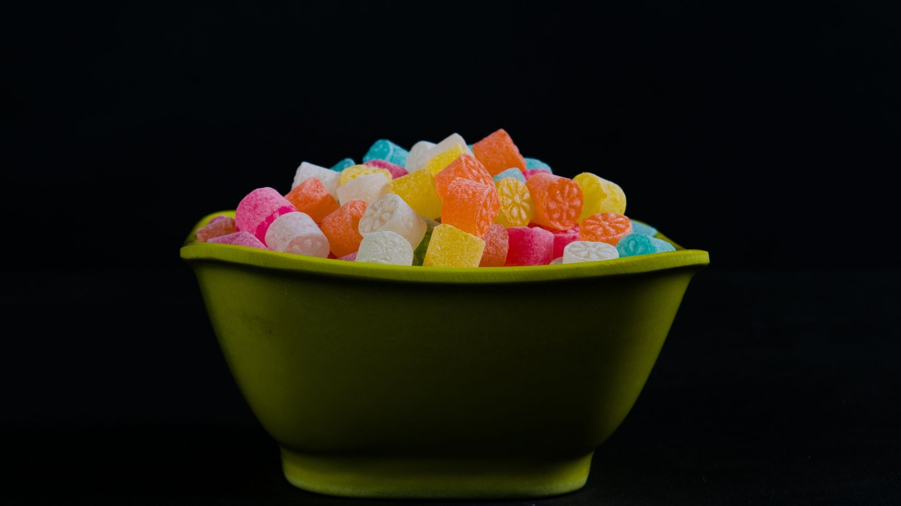
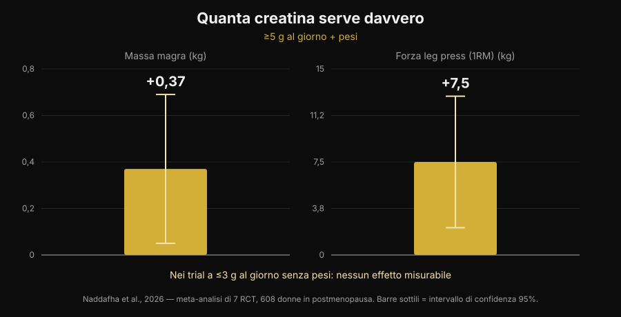
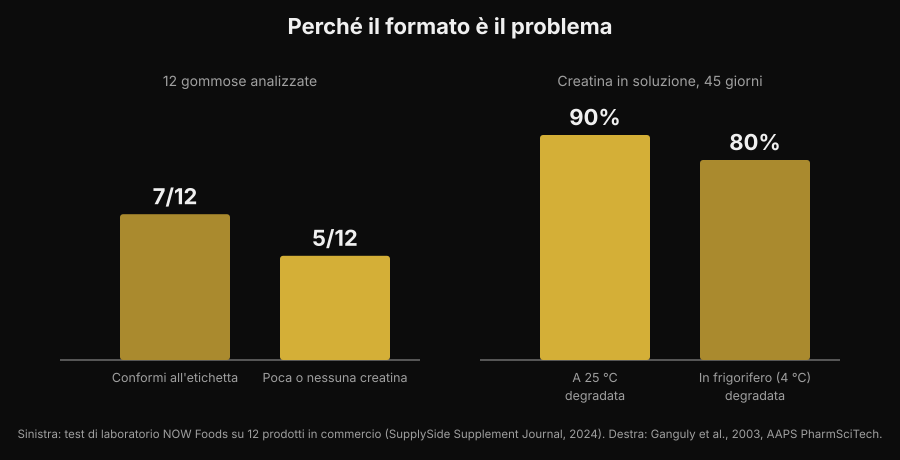

Creatina in gommose: funzionano come la polvere?
Masticare due caramelle invece di sciogliere una polvere che resta sul fondo del bicchiere: è una promessa comoda, e le ricerche su "creatine gummies" sono cresciute del 279%. La domanda vera però non è se la creatina funzioni — su quello la letteratura è chiusa da trent'anni — ma se dentro quelle gommose ci sia davvero la creatina che c'è scritta sull'etichetta. Su questo i numeri esistono, e non sono rassicuranti.

In breve
- Uno studio sulle gommose esiste, ed è positivo. Dieci settimane, 5 g al giorno di creatina monoidrato in forma di gommosa: in 32 atlete di beach volley il salto verticale e il cambio di direzione sono migliorati rispetto al controllo.
- Ma quello studio usava 5 g veri. La meta-analisi più recente trova +0,37 kg di massa magra e +7,5 kg di leg press con ≥5 g al giorno abbinati ai pesi, e nessun effetto misurabile nei trial a ≤3 g al giorno senza allenamento.
- Molte gommose non contengono quello che dichiarano. In un test di laboratorio su 12 prodotti in commercio, 5 avevano poca o nessuna creatina — e tutte e 5 contenevano creatinina.
- La creatinina non è pericolosa, è inutile. È il prodotto di degradazione della creatina: trovarla nel barattolo significa che la creatina se n'è andata prima che tu la comprassi.
- La chimica spiega perché. La creatina in polvere asciutta è stabile; in soluzione no. In acqua a temperatura ambiente il 90% si degrada in 45 giorni.
Perché le gommose sono ovunque
Il motivo non è scientifico, è logistico. La polvere di creatina ha tre difetti pratici: va dosata, va sciolta, e se l'acqua è fredda resta granulosa sul fondo. La gommosa elimina tutti e tre i problemi in un colpo solo, si porta in borsa e assomiglia a una caramella invece che a un integratore. È lo stesso meccanismo che ha spostato vitamina D e omega-3 verso il formato masticabile.
Il risultato lo si vede nelle ricerche: "creatine gummies" è oggi una query da circa 165.000 ricerche mensili con una crescita del 279%, e le prime posizioni su Google sono quasi tutte classifiche di siti che vendono il prodotto. Quasi nessuna di quelle pagine riporta i due dati che contano: quanta creatina serve, e quanta ce n'è davvero nel prodotto.
La notizia buona: uno studio sulle gommose c'è
Fino a poco tempo fa chi chiedeva "funzionano?" riceveva una risposta per analogia: dentro c'è creatina monoidrato, la creatina monoidrato funziona, quindi funzionano. Ora esiste uno studio che ha testato proprio il formato.
Trentadue atlete di beach volley, universitarie e professioniste, sono state assegnate a creatina monoidrato in gommose a 5 g al giorno oppure a un gruppo di controllo, per dieci settimane. Il gruppo creatina ha migliorato il salto verticale con contromovimento (p < 0,001) e la velocità nei cambi di direzione (p = 0,009), mentre il controllo non è migliorato o è peggiorato; sono comparse differenze favorevoli anche su massa grassa e percentuale di grasso. Nessuna differenza, invece, su massa magra, massa muscolare scheletrica e tempo di reazione (Pereira et al., 2026).
È un risultato coerente con tutta la letteratura sulla creatina in polvere, e dice una cosa semplice: la gommosa non rovina la molecola. Se la creatina c'è ed è nella quantità giusta, il veicolo non è il problema. Il che sposta tutta la questione sulle due parole in corsivo: se c'è, e se è abbastanza.
La dose è tutta la partita
Il numero che serve ricordare è 5 g al giorno. È la dose di mantenimento indicata dalla posizione ufficiale dell'International Society of Sports Nutrition, ed è esattamente quella usata nello studio sulle gommose. La fase di carico (circa 0,3 g per kg di peso al giorno per 5-7 giorni) riempie i depositi più in fretta, ma non è obbligatoria: si arriva allo stesso punto anche con 3-5 g al giorno in qualche settimana (Kreider et al., 2017).
Sotto quella soglia le cose cambiano. Una revisione sistematica con meta-analisi su sette studi randomizzati e 608 donne in postmenopausa ha trovato benefici chiari quando la creatina superava i 5 g al giorno ed era abbinata all'allenamento contro resistenza: massa magra +0,37 kg (IC 95% da +0,05 a +0,69) e leg press +7,5 kg (IC 95% da +2,2 a +12,8). Nei trial che usavano ≤3 g al giorno senza allenamento, nessun effetto misurabile (Naddafha et al., 2026).

Lo stesso ordine di grandezza torna in un trial triplo cieco su venti adulti vegani: quattro settimane a 0,1 g per kg al giorno — circa 7 g per una persona di 70 kg — hanno aumentato la massa muscolare scheletrica di 0,3 kg e migliorato il salto, senza alterazioni dei marcatori renali (López-Moreno et al., 2026).
Ora il conto pratico, che è il motivo per cui le gommose vanno guardate con attenzione. Ecco quante gommose servono al giorno per arrivare a 5 g, in base a quanto dichiara la singola gommosa:
| Creatina dichiarata per gommosa | Gommose al giorno per 5 g |
|---|---|
| 0,5 g | 10 |
| 0,75 g | 7 |
| 1 g | 5 |
| 1,25 g | 4 |
| 1,5 g | 4 (3,3 arrotondato) |
| 2 g | 3 (2,5 arrotondato) |
Calcolo Nurvan: 5 ÷ grammi dichiarati per gommosa, arrotondato per eccesso. I grammi per gommosa vanno letti sull'etichetta del prodotto che hai in mano.
Il punto non è il numero in sé, è che la porzione dichiarata sul fronte della confezione quasi mai coincide con 5 g. Se un prodotto suggerisce "2 gommose al giorno" e ogni gommosa dichiara 1 g, stai assumendo 2 g: la fascia che nella meta-analisi non ha prodotto effetti misurabili.
Il problema vero: cosa c'è davvero dentro
Qui arriviamo alla parte che le classifiche di affiliazione non raccontano. Un laboratorio industriale ha comprato 12 gommose di creatina su Amazon e sui siti dei produttori e le ha analizzate. Sette prodotti rispettavano la dichiarazione in etichetta, con margini anche generosi. Gli altri cinque contenevano poca o nessuna creatina. E in tutti e cinque è stata trovata creatinina, in quantità da piccole a rilevanti (test NOW Foods riportato da SupplySide Supplement Journal, 2024).

La creatinina è il prodotto finale della degradazione della creatina. Non è un veleno — il tuo corpo ne produce e ne elimina ogni giorno — ma non ha nessuna attività ergogenica. Trovarla in un integratore significa una cosa sola: quella creatina si è degradata prima di arrivarti in bocca, e stai pagando una caramella.
Perché proprio le gommose? Per un motivo chimico, non commerciale. La creatina monoidrato in polvere asciutta è molto stabile; in soluzione no. Uno studio di stabilità ha sciolto formulazioni di creatina in acqua a pH 6,2 e ha misurato il contenuto per 45 giorni: a temperatura ambiente si è degradato il 90% della creatina, in frigorifero l'80% (Ganguly et al., 2003). Una gommosa è un gel che nasce caldo, contiene acqua ed è spesso acidificato per il gusto, e poi resta mesi sullo scaffale a temperatura ambiente: sono esattamente le condizioni che accelerano la conversione. Non vuol dire che tutte le gommose siano inutili — sette su dodici erano a posto — ma che il formato è intrinsecamente più fragile del barattolo di polvere, e che senza un'analisi di laboratorio non hai modo di sapere in quale metà sei finito.
Cosa dice davvero la ricerca
| Affermazione diffusa | Verdetto | Fonte |
|---|---|---|
| "Le gommose non funzionano, la creatina si rovina" | Da precisare: in uno studio hanno funzionato | Pereira et al., 2026 |
| "Basta prendere le gommose indicate in etichetta" | Smentito: conta arrivare a 5 g | Naddafha et al., 2026; Kreider et al., 2017 |
| "Se c'è scritto creatina, dentro c'è creatina" | Smentito: 5 prodotti su 12 ne avevano poca o nessuna | Test NOW Foods, 2024 |
| "La creatinina nelle gommose fa male ai reni" | Smentito: è inerte, il problema è la dose mancante | Kreider et al., 2017; López-Moreno et al., 2026 |
| "Serve per forza la fase di carico" | Da precisare: accelera, non è obbligatoria | Kreider et al., 2017 |
| "Le forme più solubili sono più efficaci" | Non dimostrato nell'uomo | Alraddadi et al., 2018 |
Sull'ultima riga vale la pena fermarsi un attimo, perché è l'argomento che accompagna quasi tutte le forme alternative. È vero che la creatina cloridrato è più solubile del monoidrato, e uno studio di farmacocinetica nel ratto, con modellazione, ha stimato una biodisponibilità orale più alta per la forma cloridrato rispetto al monoidrato (Alraddadi et al., 2018). Ma è un modello su animali: nessun trial sull'uomo ha mostrato che questo si traduca in più forza o più massa, e il monoidrato resta la forma su cui poggia praticamente tutta la letteratura, inclusa quella sulla sicurezza a lungo termine (Kerksick et al., 2026). Lo stesso principio vale per la gommosa: è un veicolo, non un vantaggio.
Come applicarlo
- Parti dai grammi, non dalle caramelle. Leggi quanti grammi di creatina monoidrato dichiara la singola gommosa e fai il conto per arrivare a 5 g al giorno. Se la confezione non lo dichiara per unità ma solo per "porzione", è già un segnale.
- Diffida dei prodotti che non dicono "monoidrato". È la forma usata negli studi, gommose comprese. Le diciture generiche o le forme "proprietarie" non hanno la stessa base di evidenze.
- Cerca una certificazione di parte terza. Informed Sport, NSF Certified for Sport e analoghi fanno analizzare i lotti. Per le gommose conta più che per la polvere, proprio perché il formato è più instabile.
- Fai il conto del costo per grammo. Dividi il prezzo per i grammi totali di creatina della confezione, non per il numero di gommose. Il confronto con il barattolo di polvere di solito finisce lì.
- Guarda anche gli zuccheri. Cinque gommose al giorno sono cinque dolcetti al giorno: controlla la riga degli zuccheri sull'etichetta nutrizionale e mettila nel conto della giornata.
- L'orario non conta quanto la costanza. Quello che riempie i depositi è assumerla tutti i giorni, non prenderla nella finestra giusta: ne ho scritto in dettaglio nell'articolo su quando prendere gli integratori.
Prova Nurvan — l'integrazione tracciata insieme ai carichi
In Nurvan registri cosa assumi e quando nella sezione integrazione, e lo vedi accanto allo storico di carichi, ripetizioni e RIR delle tue sedute. Così, se cambi formato o marca di creatina, puoi guardare cosa è successo ai numeri in palestra nelle settimane successive invece di fidarti di una sensazione. Nello stesso profilo trovi anche gli esami che hai caricato.
Domande frequenti
Le gommose di creatina funzionano davvero?
Possono funzionare, a due condizioni. Nello studio disponibile, dieci settimane a 5 g al giorno in forma di gommosa hanno migliorato salto verticale e cambi di direzione in atlete di beach volley (Pereira et al., 2026). Le condizioni sono che il prodotto contenga davvero la creatina dichiarata e che tu arrivi a circa 5 g al giorno.
Quante gommose di creatina devo prendere al giorno?
Dipende da quanti grammi dichiara ciascuna: l'obiettivo è circa 5 g al giorno di creatina monoidrato. Con 1 g per gommosa sono 5 gommose, con 0,5 g sono 10. La "porzione consigliata" stampata sulla confezione spesso resta sotto i 5 g.
La creatinina trovata in alcune gommose è pericolosa?
No. La creatinina è il prodotto di degradazione della creatina e il corpo la produce ed elimina normalmente; negli studi la creatina non ha alterato i marcatori renali (Kreider et al., 2017; López-Moreno et al., 2026). Il problema non è la tossicità ma l'efficacia: dove c'è creatinina, manca creatina. Se hai valori degli esami fuori range o una patologia renale nota, la cosa da fare è parlarne con il tuo medico, non scegliere un integratore da solo.
Meglio gommose o polvere?
Sulla molecola non c'è differenza dimostrata. La polvere ha tre vantaggi concreti: è stabile a lungo, costa molto meno al grammo e ti fa dosare i 5 g esatti. La gommosa vince solo sulla comodità. Su come si collocano creatina e altri integratori per rapporto evidenze/prezzo ho fatto una tier list degli integratori per la forza.
Leggi anche
- Tier list integratori forza: cosa dice la ricerca — dove sta la creatina rispetto a tutto il resto, evidenze alla mano.
- La creatina fa cadere i capelli? — l'altra domanda più cercata sulla creatina, con lo studio che ha fatto nascere il dubbio.
- Quando prendere gli integratori: conta l'ora? — perché la costanza pesa più del momento di assunzione.
Fonti
- Pereira F, Forbes SC, Romano V, Christopher P, Santana JC, Antonio J, 2026. Effects of Creatine Monohydrate Gummies on Performance and Body Composition in Female Beach Volleyball Athletes. Journal of Functional Morphology and Kinesiology 11(1):105. PMID 41900512. DOI
- Naddafha S, Antonio J, Kreider RB, Stout JR, 2026. Creatine monohydrate for lean mass, strength, and bone density in postmenopausal women: a systematic review and meta-analysis. Journal of the International Society of Sports Nutrition 23(1):2668435. PMID 42141930. DOI
- Kreider RB, Kalman DS, Antonio J, Ziegenfuss TN, Wildman R, Collins R, Candow DG, Kleiner SM, Almada AL, Lopez HL, 2017. International Society of Sports Nutrition position stand: safety and efficacy of creatine supplementation in exercise, sport, and medicine. Journal of the International Society of Sports Nutrition 14:18. PMID 28615996. DOI
- Kerksick C, Gonzalez D, Stout J, Forbes S, Candow D, Ziegenfuss T, Marshall R, Schwesig R, Kreider R, 2026. The emerging and evolving evidence supporting creatine as an ergogenic aid: history and applications. Journal of the International Society of Sports Nutrition 23(1):2646627. PMID 41870601. DOI
- López-Moreno M, Muñoz A, Aguilar-Navarro M, Gutiérrez-Hellín J, Franco-Andrés A, López-López P, Crespo-Cañizares A, Marrero-Fernández P, Forbes SC, 2026. Does creatine supplementation improve strength and power in physically active individuals on a vegan diet? A randomized, triple-blind, placebo-controlled trial. European Journal of Applied Physiology 126(10):5521-5532. PMID 42390589. DOI
- Ganguly S, Jayappa S, Dash AK, 2003. Evaluation of the stability of creatine in solution prepared from effervescent creatine formulations. AAPS PharmSciTech 4(2):E25. PMID 12916907. DOI
- Alraddadi EA, Lillico R, Vennerstrom JL, Lakowski TM, Miller DW, 2018. Absolute Oral Bioavailability of Creatine Monohydrate in Rats: Debunking a Myth. Pharmaceutics 10(1):31. PMID 29518030. DOI
Riferimenti bibliografici recuperati tramite PubMed. Dato di laboratorio sulle 12 gommose: test NOW Foods riportato da SupplySide Supplement Journal, 2024 — articolo. Tema scelto con la ricerca di tendenza del 5 novembre 2026: "creatine gummies" è fra le query in più forte crescita del settore integratori e le pagine che la occupano sono quasi tutte di chi vende il prodotto.
Giammaria Loi è il fondatore di Nurvan. Si allena con i pesi dal 2012, lavora come personal trainer e coach certificato FIPE dal 2013 e gareggia nel powerlifting a livello nazionale dal 2018. Ogni articolo che firma parte dagli studi scientifici e arriva a ciò che funziona davvero in palestra.
Nota: contenuto informativo, non sostituisce il parere di un medico o professionista.